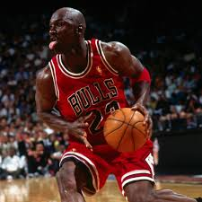

Michael Jordan
This man won three in a row, left to play baseball, then came back to win three in a row again, and returned once more to become one of the oldest players to average 20 points per game and score 40 or more points in a game. Goat, no questions asked. MJ never played a seventh game in six finals and won the "Defensive Player of the Year" ('88) along with his five MVPs, six Finals MVPs, and was included in the NBA's list of greatest players. 75th-anniversary team member.
LeBron James

American basketball player, playing as a forward and guard. He plays for the NBA team "Los Angeles Lakers." The first in NBA history to score 40,000 points in his career.
Four-time NBA champion, four-time NBA Finals MVP, leading scorer of the 2007/08 regular season, and NBA Rookie of the Year 2003/04. 13-time NBA All-Star, twice in the second team, once in the third team, five times in the NBA All-Defensive Team, participated in the All-Star Game 16 times, where he was thrice recognized as the Most Valuable Player. The best shooter in the history of NBA regular seasons and playoffs. In the top 5 leaders in assists, made free throws, and played minutes, as well as in the top 10 leaders in games played, steals, and three-pointers in NBA history. Leads among all active NBA players in rebounds. Leads in NBA history in turnovers.
Kareem Abdul-Jabbar
Kareem Abdul-Jabbar is an American basketball player who played 20 seasons in the National Basketball Association. During his career as a center, Abdul-Jabbar was a record six-time NBA Most Valuable Player(MVP), more than anyone else in the National Basketball Association. During his career as a center, Abdul-Jabbar was named to the All-Star Game a record 19 times, named to the All-Star Team 15 times, and named to the NBA All-Defensive Team 11 times. In addition, he won the NBA title six times and was named NBA Finals Most Valuable Player twice. He was inducted into the Basketball Hall of Fame in 1995, named one of the 50 best players in the history of the association in 1996, and one of the 75 best players in 2021. NBA coach Pat Riley, as well as players Isaiah Thomas and Julius Erving, called Abdul-Jabbar the greatest basketball player of all time.
Magic Johnson
"Magic" Johnson, Jr. (born August 14, 1959 in Lansing, Michigan) is an American professional basketball player. Throughout his career, he played for the Los Angeles Lakers (1979–91, 1996) as a point guard. 5-time NBA champion (1980, 1982, 1985, 1987, 1988), 3-time season MVP (1987, 1989, 1990), 12-time All-Star, 10-time All-Season All-Star team (1983— 1991 - first composition, 1982 - second composition). Twice named NBA All-Star Game MVP in 1990 and 1992. Olympic champion 1992.
In 1996, Johnson was included in the list of the 50 greatest players in NBA history, and in 2002 he was inducted into the Basketball Hall of Fame.[1] In 2007, he was selected as the best point guard in NBA history by ESPN[2]. His friendship and rivalry with Boston Celtics leader Larry Bird went down in history as one of the most striking rivalries in the entire existence of the NBA.
Larry Bird
.jpeg)
Larry Joe Bird is an American basketball player of Irish descent who spent his entire professional career with the NBA club Boston Celtics. Olympic champion (1992) Happy season (1980-88 - first team, 1990 - friend team). Enter the top 50 players in NBA history.
Bird is one of the greatest white basketball players in NBA history, as well as a versatile player who regularly ranked in the top ten in scoring, rebounds and assists throughout his career. Larry Bird is the sole holder of the title of “NBA's Greatest Player,” “NBA's Greatest Finalist,” “NBA Rock Coach,” and “NBA Rock Manager.” Five years after the end of his career, Gravity Bird joined the Indiana Pacers club as head coach. He coached the team for three seasons, after which he entered the exhibition. In 2003, he turned to the Boston Celtics, who took over the President's position in basketball operations, and after the 2011/12 season, he returned to health.